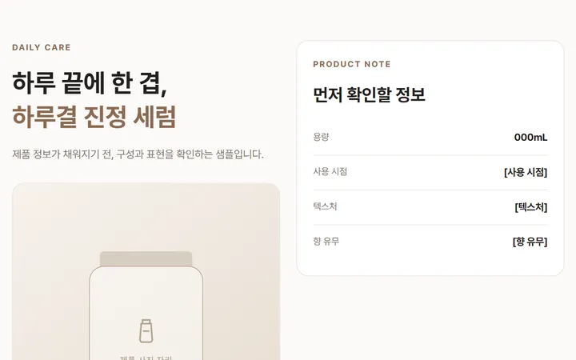
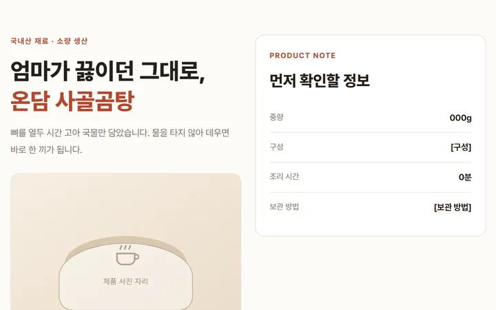
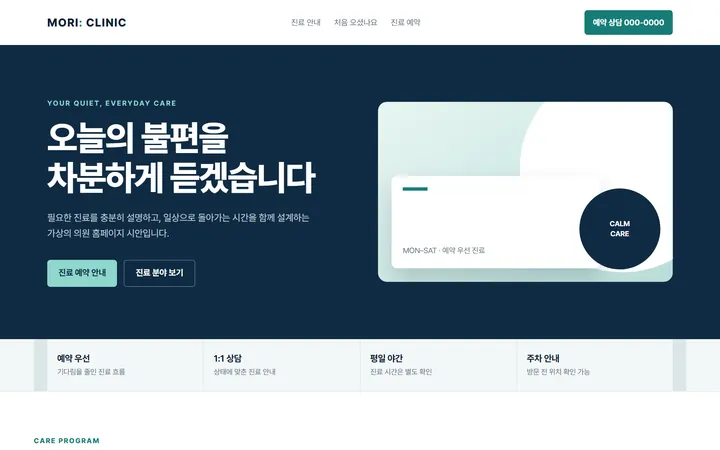
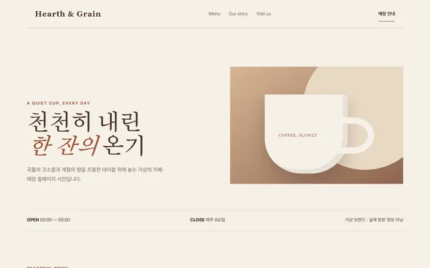
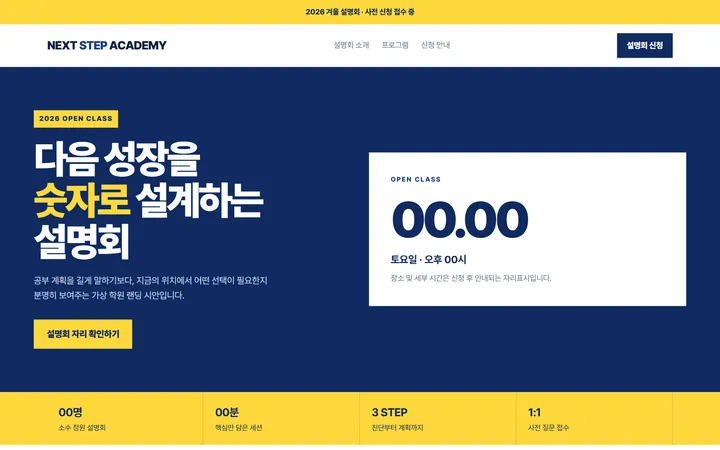
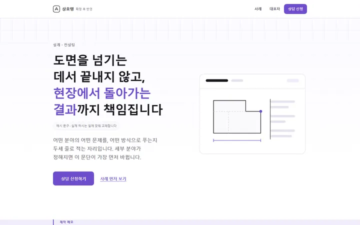
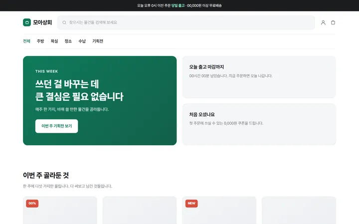
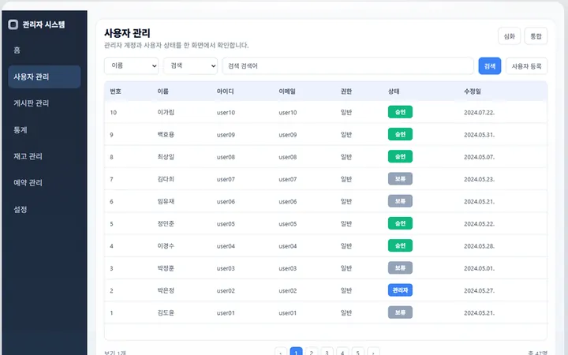
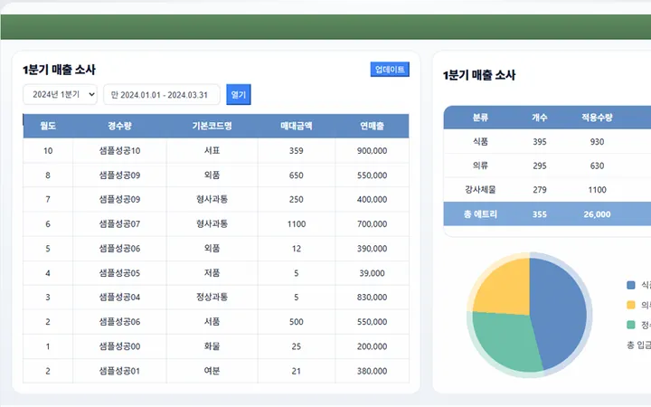

무엇을 만드는가
만드는 건 웹과 프로그램, 줄어드는 건 손으로 하던 일입니다
규모와 예산에 맞춰 필요한 만큼만 잡습니다. 안 해도 되는 건 안 한다고 말합니다.
일시불
만들어 드립니다
업무 자동화 · 구축
-
엑셀 반복 작업 자동화
흩어진 파일을 모아 정리하고 보고서까지 자동으로
-
데이터 수집 자동화
가격·재고·공고를 원하는 조건으로 모아 시트나 DB에 쌓기
-
문서 자동 발행
견적서·명세서·거래명세를 양식에 채워 PDF·메일로
-
알림 자동화
미납·재고·마감을 메일·문자·카톡으로 때맞춰
-
시스템 연동
사이트 ↔ 시트 ↔ 쇼핑몰 ↔ 사내 시스템을 API로 잇기
-
관리자·운영 화면
예약·주문·회원을 한 화면에서 처리하는 백오피스
월 구독
대신 처리해 드립니다
운영 대행
-
상품 등록 대행
스마트스토어·쿠팡에 대량 등록하고 수정까지
-
쇼핑몰 이관진행 경험 있음
스마트스토어에서 카페24 자사몰로 옮기고 열리게 만들기
-
상세페이지 제작·교체
시즌마다 갈아끼우는 일까지 맡아서
-
사이트 유지보수
문구·이미지·공지 업데이트를 요청만 하면
-
검색 노출 관리
구글·네이버 색인, 구조화 데이터, 순위 추적
-
AI 응대 비서 세팅진행 경험 있음
문의를 먼저 받아 정리하는 비서를 고객사 채널에
진행 방식
처음 연락부터 넘겨드릴 때까지, 다섯 단계
단계마다 무엇을 하고 무엇을 확인하는지 미리 알려 드립니다.
-
상담·요구 정리
지금 어떻게 일하고 계신지부터 듣습니다. 필요한 기능보다 불편한 지점을 먼저 정리합니다.
-
탐색·제안
비슷한 사례와 가능한 방법을 찾아 두세 가지로 좁힙니다. 예산과 일정에 맞는 범위를 같이 정합니다.
-
제작 진행
정한 범위대로 만들고 중간 화면을 보여드립니다. 변경할 내용은 함께 확인하고 범위와 일정을 조정합니다.
-
문의·응답
작업 중 생기는 질문은 카카오톡으로 주고받습니다. 결정이 필요한 건 선택지를 정리해서 여쭙습니다.
-
산출물 정리
도메인과 서버를 연결하고, 접속 정보와 수정 방법을 정리해 넘겨드립니다. 넘긴 뒤에도 막히면 물어보실 수 있습니다.
실제 의뢰 건과 자체 제작 샘플이 함께 있습니다. 고객사명은 동의를 받은 뒤에 공개합니다.
상세페이지
-

뷰티 상세페이지
자체 제작 샘플
성분을 늘어놓기 전에, 언제 쓰는 제품인지부터 잡았습니다.
-

식품 상세페이지
자체 제작 샘플
눈으로 판단하기 어려운 품목은 확인할 수 있는 근거부터 세웁니다.
홈페이지·랜딩
-

의원·클리닉 홈페이지
자체 제작 샘플
진료 안내를 늘어놓기 전에 예약으로 가는 길부터 냅니다.
-

카페·매장 홈페이지
자체 제작 샘플
사진이 아직 없어도 되는 구조. 여백과 서체로 분위기를 만듭니다.
-

설명회 랜딩페이지
자체 제작 샘플
신청 하나로 좁힌 구성. 일정과 정원을 위에 두고 설명은 뒤로 뺐습니다.
-

설계·컨설팅 홈페이지
실제 의뢰
PC와 모바일을 같은 흐름으로 짰습니다.
쇼핑몰·자사몰
-

자사몰
자체 제작 샘플
주문에서 정산까지. 결제까지 붙일 수 있는 형태입니다.
관리자·운영 시스템
-

관리자 — 사용자·권한
실제 의뢰
회원과 권한을 나누고 관리자 계정을 따로 둡니다.
-

관리자 — 매출 집계
실제 의뢰
기간별 집계와 차트를 한 화면에서 봅니다.
월 구독 상품
월 5만원, AI 비서와 담당자가 함께 붙습니다
아이비는 더줌의 AI 비서 프로그램입니다. 문의와 요청을 먼저 받아 정리하고, 정리된 일은 담당자 아이준이 직접 처리합니다.
월 구독
AI 비서 + 담당자 구독
월 5만원
-
AI 비서 아이비
문의와 요청을 먼저 받아 내용을 정리하고, 빠진 것이 없는지 확인합니다. 사람 상담원이 아니라 프로그램입니다.
-
담당자 아이준
정리된 요청을 실제로 처리하는 20년차 개발자입니다. 무엇을 어디까지 할지는 사람이 판단합니다.
포함
반복되는 일상 업무
월 5만원 안에서 처리합니다. 처리할 분량과 빈도는 협의합니다.
-
문의 응대
들어온 문의를 아이비가 먼저 받아 정리합니다
-
반복 업무 대행
등록·정리·업데이트처럼 매번 손이 가던 일
-
자료 정리
흩어진 파일과 표를 쓸 수 있는 형태로
-
사이트 유지보수·수정
문구·이미지·공지 교체를 요청하시면 됩니다
별도
새로 만드는 일은 따로
비용은 범위를 보고 먼저 알려 드립니다
-
새 프로그램 제작
지금 없는 기능을 새로 만드는 일
-
신규 구축
홈페이지·자사몰·관리자 시스템을 처음부터
-
대규모 개편·이관
범위가 큰 작업은 건별로 따로 잡습니다
-
시스템 연동
사이트 ↔ 시트 ↔ 쇼핑몰 ↔ 사내 시스템을 API로 잇기
문의
무엇을 만들지 정하지 않으셔도 괜찮습니다
지금 어떤 점이 불편한지부터 알려 주세요. 방법은 같이 찾으면 됩니다.
확인하는 대로 답을 드립니다.